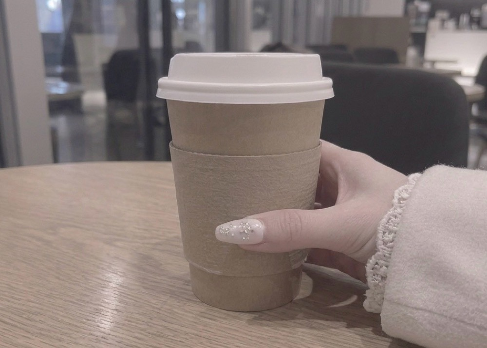
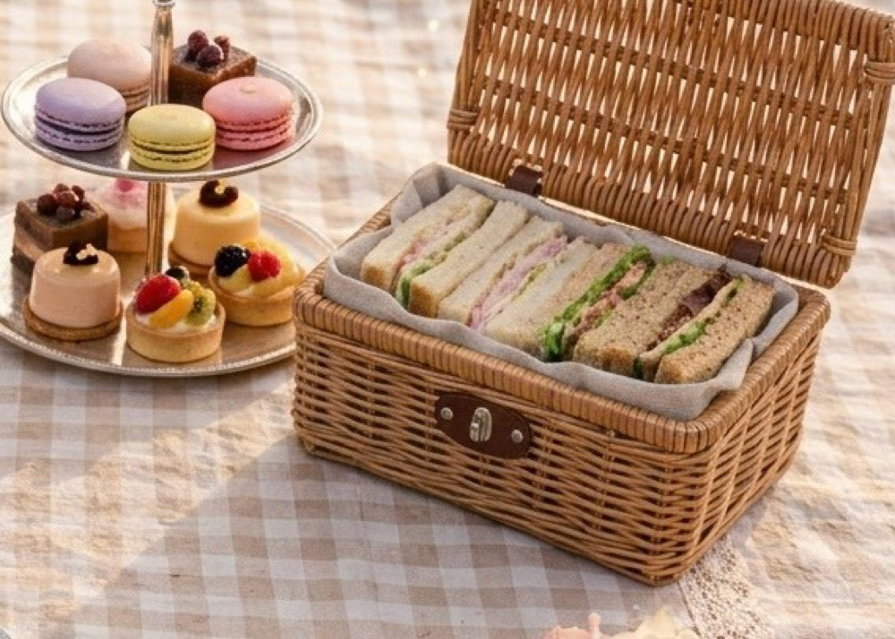
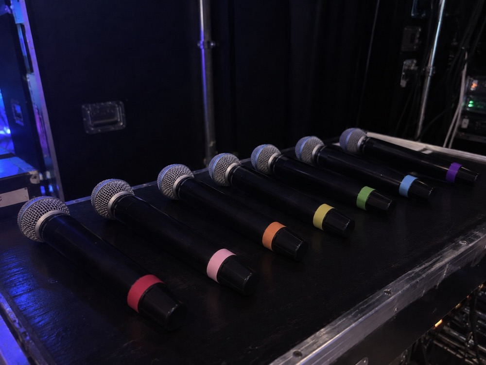
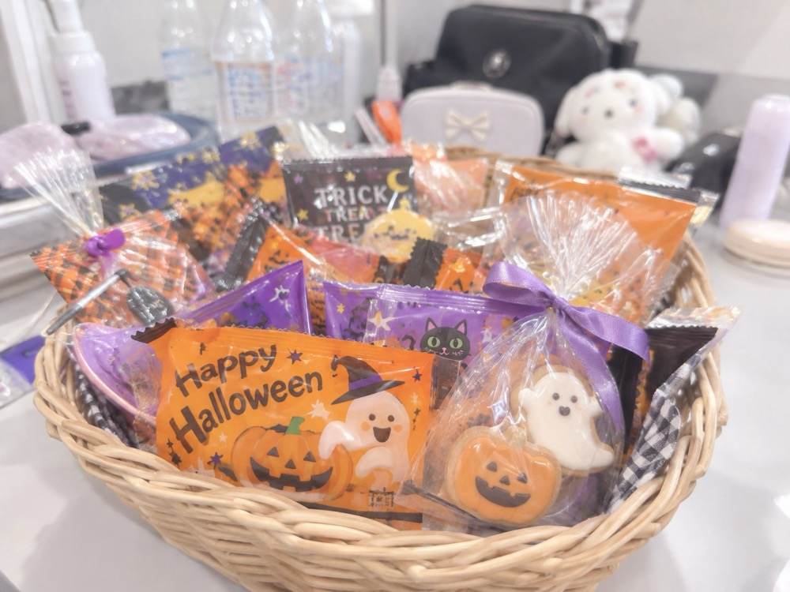
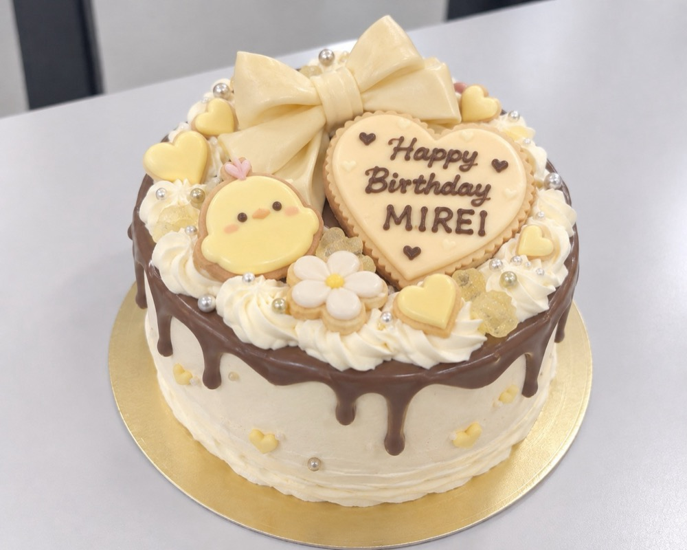
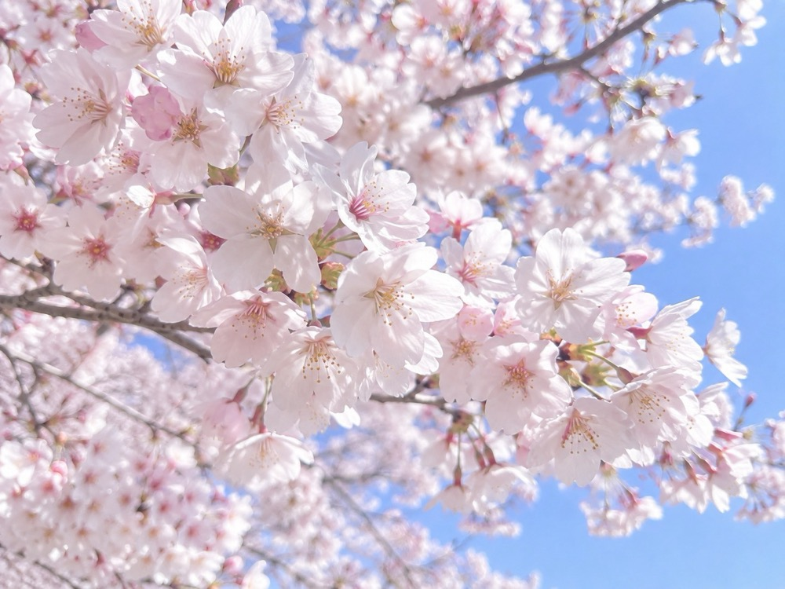

2027.1.29
無題 FC限定
やっぱりこうなってしまった 私のせい ごめんなさい
やっぱりこうなってしまった 私のせい ごめんなさい
さむい😭 なんか急に寒くなった気がしてやばい、ふるえてしまう…🧊 りんちゃんてばこんな寒いのにいつもアイスのドリンク飲んでてまじで意味がわからない！！なぎさんとふたりでありえないねって言ってた ぜったいホットしか勝たんよね☕️

りんちゃんが奢ってくれた♡ありがと🥺
最近色々あってちょっとお疲れモードかも…😔みんなに会えてないからかなー🥺 なんかね、別にそんなに考えなくてもいいのかなーってことを色々考えちゃったりとか、あんまり見たくないなーってことが見えちゃったりとか、知らないでいたいことを知っちゃったりして… 多分投稿することはこの先もないと思うけど、いつかもし出したくなったときにすぐ出せるように下書きにたっくさん吐き出したらちょっと元気出た！あそこなら私しか見られないし… あ、もし見ちゃった人がいても黙っててね🤫 みんなに会うときにへこんだ顔したくないからがんばって元気になるぞ～🐥
ピクニック ᐕ)ﾉ

…じゃなくて、ピクニック風の撮影だったよ🍙 これは載せていいよーって言ってもらったから載せちゃう！ ゆのとふたりでマンネ組のおしごとでした🐰🐥 ふわふわでレースとか沢山ついたらぶり～なお洋服着せてもらえて嬉しすぎた( ; ; ) 普段こういうの着ないから新鮮だったな～ ゆのはさすがに似合ってた🐰🎀さいこう サンドイッチめちゃ美味しかったな💭 またプライベートでも買いに行こ～
デビュー1周年でした！！ お祝いしてくれたみんなも、いつも見守ってくれてるみんなも、本当にありがとう♡

この1年、アイドルだけじゃなくて色んなお仕事させてもらって、本当に忙しくて目回りそうだったけど本当に楽しかったな～^-^ まだまだずーっと走り続けていくから、ずーっと着いてきてね🤞🏻やくそく🤝🏻💛
トリックオアトリート ᐕ)ﾉ すっかり街中ハロウィンムードだねぇ🎃 私たちもお仕事で黒っぽい衣装用意してもらって、ケータリングもいつも以上にお菓子たっくさんで、ほんのりとハロウィン気分でした👻

衣装の写真はまだ見せられないんだけどいつもよりもかっこいい感じになってるから楽しみにしててね～🖤今回はばぶじゃないみれいを見せられているのでは…？
みればぶ爆誕‼️というわけで誕生日でした！！

みんながケーキ買ってきてくれた😭😭ありがとう～～🥲 めちゃうまだったしこのリボンのやつ、もちもちしてておいしかった🎀 みんなからのお祝いもSNSとかで沢山見たよ～！可愛い祭壇作ってくれてたりケーキ食べさせてくれてたり、見てるだけでしあわせだった🥺ありがとう！ 今年のみれいさんもよろしくね🍼
やほ ᐕ)ﾉ みれいだよ～ 今日から新生活の人も多かったかな？じつは私も、今日は大学の入学式がありました🎓 実はみれいさん今年から大学生なの！！デビューのときにはもう進学先決まってたんだけどみんなを驚かせたくて黙ってたんだ😼😼ﾄﾞﾔ…✌🏻

これは大学の近くで咲いてた桜🌸 プライベートではスーツ初めて着たんだけどなんかむずがゆかった…いつかお仕事で着る日が来たりもするのかな？ 新しい季節、みんなでがんばってこーね💪🏻
はじめまして～！＆ 久しぶり ᐕ)ﾉ このたび、UnRe:alというグループでデビューさせていただくことになりました きさき みれい 城崎 みれい です！ メンバーカラーは💛イエロー💛 UnRe:alの最年少です🐥 みんなからはみーたんとかみればぶとかいわれてます、ちょっと心外…😀たぶんそんなにばぶではありません🍼 でもアイドルは正真正銘の1年生なのでがんばります👧🏻📛 これからよろしくね\( 'ω')/